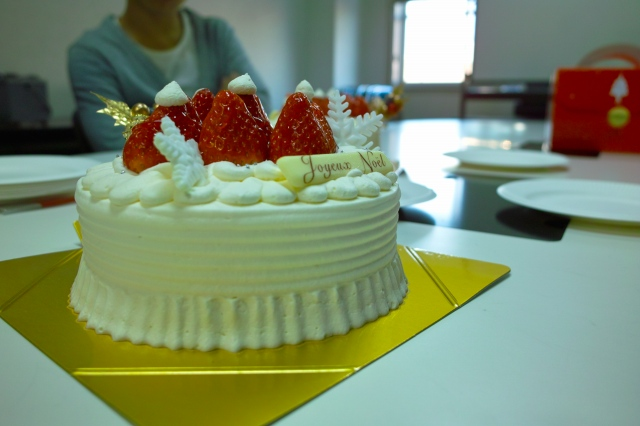
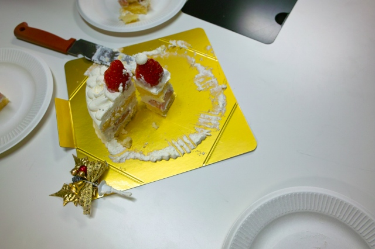

| ・ケーキを食べる会 (H22.12.24) | |||
去年と違ってたまたまクリスマス・イヴの日ですが、ケーキを食べました。いやたまたま。なぜか今日は休みの人が多いなぁ。 来てない人は残念でした。なんかねぇ、この時期になると食べたくなるよねー（助教談）。 |
|||
|
大きなケーキが無いので2個。 |
F島くん＠配膳中 | ||
|

クリスマスなケーキです |
M永くん「いちごは切りたくないんです！」 | ||
|
井の字って斬新すぎるカット |
角が一番大きい、早い者勝ち | ||
|

遠慮の塊＠角、いらない子＠真ん中 |
これがナッシュ均衡。撮影会 | ||
|
M永くん「等分したらケーキぐちゃぐちゃになるって」 |
M脇くん「デコレーションはオレのもの」 | ||
|
K野くん「普通の切り方でいくよ」 |
K岡姐さんとF島くん「あ....」 | ||
|
配給中 |
一同半笑い | ||
|
切り分けていくと... |
世の中には平等なんか無いんです | ||
|
参加できてない人に切り分け |
笑顔でHさん＠マスク | ||
|
なにそれY名田くん？ |
D論提出資料完成！ | ||
|
村田先生にも |
ケーキを食べる会終了 | ||